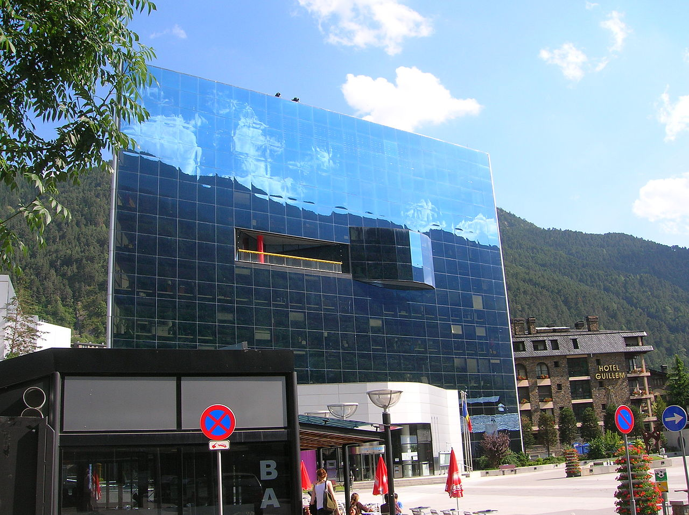

Encamp
-
Engolasters
- Centro Deportivo Pas de la Casa
- Grandvalira

Engolasters (el traga-estrellas), es un lago rodeado de pinos al cual se puede acceder en coche a través de la carretera dels Cortals, o incluso a pie desde el pueblo de Encamp.
Las vistas arriba son maravillosas, y si no quieres hacer un picnic sentado en la hierba, puedes elegir comer en uno de los dos restaurantes que hay en el lago (uno de ellos, con terraza panorámica).
en el lago de Engolasters comienza también el popular Camino de las Pardinas, plano y de 3 kilómetros y medio, a lo largo de la ladera de la montaña, desde el cual podréis ver las mejores vistas del Valle de Encamp, e incluso el Santuario de Meritxell a lo lejos.
A lo largo del Camino de las Pardinas pasaréis al lado de varias cascadas, y se exponen distintas especies de plantas locales con carteles explicando sobre las mismas. Es mi lugar favorito de todo Andorra para ir a hacer un poco de footing.